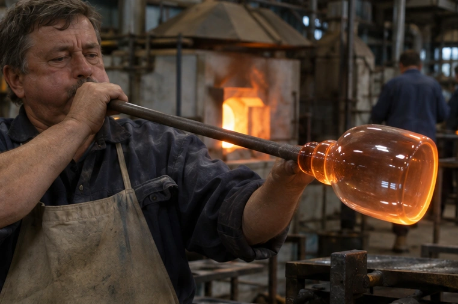

Дыхание стекла
Нажмите на рукоять меха. На экране верстака мастер выдует форму, затем в холодном цехе другой мастер нарежет грани.

Нажмите на рукоять меха. На экране верстака мастер выдует форму, затем в холодном цехе другой мастер нарежет грани.
